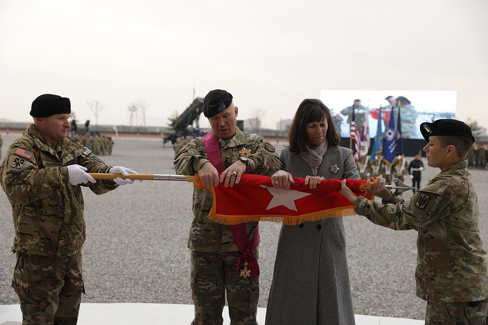
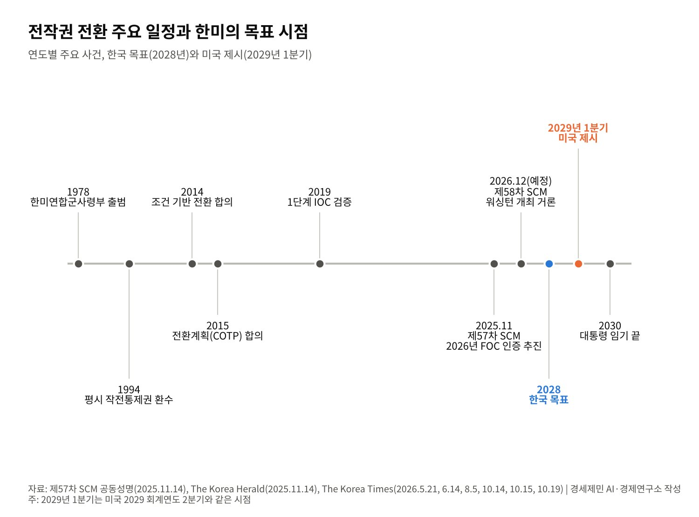

[동맹과 국방] 전작권 전환, 한국은 '2028년' 미국은 '2029년 1분기'…12월 안보협의회의가 가른다
2단계 완전운용능력(FOC) 검증 올해 목표, 주한미군사령관 "조건이 바뀌었다"
제57차 SCM 공동성명 "2026년 FOC 인증 추진", 목표 연도는 빠져
군사력 지수 세계 5위에도 전환 조건은 '능력'과 '시간' 사이에서 흔들려
이재명 대통령은 2026년 10월 19일 취임 500일 기자간담회에서 전시작전통제권(전작권) 전환을 두고 말했다. 한국이 스스로 방어할 수 있는지 확인한 뒤 넘기겠다는 미국의 선의에 고맙다고 했다.
이어 「그건 우리가 스스로 해야 할 일이라고 생각한다. 잘될 것」이라고 했다. 이름은 들지 않았지만 닷새 전 제이비어 브런슨 주한미군사령관의 발언을 겨냥했다는 해석이 나왔다.
브런슨 사령관은 10월 14일 워싱턴의 한 세미나에서 「조건이 바뀌었고 우리는 계획을 바꿨다. 지켜야 할 새 기준이 있다」고 말했다. 「시간 그 자체도 하나의 조건」이라고 했다. 전작권 전환은 어디까지 왔고 무엇이 막고 있는지 짚는다.
1. 세 단계 검증과 세 가지 조건
한국은 1994년 평시 작전통제권을 돌려받았다. 전시 작전통제권은 1978년 출범한 한미연합군사령부가 여전히 갖고 있다. 두 나라는 2014년 시기가 아닌 조건에 따라 넘기기로 했고, 2015년 조건에 기초한 전작권 전환계획에 합의했다.
검증은 세 단계다. 기본운용능력(IOC), 완전운용능력(FOC), 완전임무수행능력(FMC)이다. 첫 단계는 2019년 검증을 마쳤다. 지금은 한국군 4성 장군이 이끌 미래연합사령부의 둘째 단계를 검증하고 있다.
조건은 세 가지다. 강신철 국방부 장관은 10월 국정감사에서 세 가지 큰 조건은 그대로이며, 다만 판단하는 방식은 달라질 수 있다고 말했다. 갈등의 씨앗이 이 「판단하는 방식」에 있다.
2. 2025년 11월의 약속, 목표 연도는 없었다
안규백 당시 국방부 장관과 피트 헤그세스 미국 전쟁부 장관은 2025년 11월 4일 서울에서 제57차 한미안보협의회의(SCM)를 열었다. 11월 14일 나온 공동성명은 2026년 미래연합사령부 본부의 FOC 인증을 추진한다고 적었다.
두 장관은 조건 충족을 앞당기는 데 필요한 능력을 갖출 로드맵을 만들기로 했다. 그러나 공동성명은 양국이 승인한 전환계획의 조건이 충족돼야 전환한다고 못 박았다. 목표 연도는 들어가지 않았다.
공동성명과 같은 무렵 백악관이 낸 한미 공동 설명자료도 같았다. 두 나라는 전환을 향해 계속 협력하고, 한국은 북한에 맞선 재래식 방어를 이끌 능력을 빠르게 키운다고 적었다. 날짜는 없었다.

3. 엇갈린 시간표, 2028년과 2029년 1분기
한국은 2028년, 이르면 2027년 말 전환을 목표로 해 왔다. 이 대통령은 8월 18일 국무회의에서 임기가 끝나는 2030년 전에 전작권을 넘겨받아야 한다고 했다. 국방부는 올해 FOC 검증을 마치고 SCM에서 목표 연도를 정하려 한다.
미국의 시계는 다르다. 브런슨 사령관은 4월 상원 군사위원회에서 「정치적 편의가 조건을 앞지를 수는 없다」고 말했다. 로드맵은 늦어도 2029년 1분기에 달성될 것이라고 했다.
5월 보도에는 「2029 회계연도 2분기」를 겨냥한 로드맵이 미국 전쟁부(국방부)에 제출됐다는 브런슨 사령관의 의회 발언이 나온다. 미국 회계연도는 10월에 시작하므로 2029 회계연도 2분기는 2029년 1~3월이다. 두 표현은 같은 시점을 가리킨다.
한국은 이 시간표에 합의한 적이 없다고 밝혔다. 한국 목표와 미국 제시안의 차이는 길게 잡아도 1년 남짓이다. 두 시점 모두 이 대통령 임기 안이다. 차이는 날짜보다 누가 준비를 판정하느냐에 있다.

4. 미뤄진 안보협의회의, 다시 저울에 오른 FOC
국방부는 8월 제58차 SCM을 10월에 열어 목표 연도를 정하겠다고 했다. 그러나 두 나라는 회의를 11월 3일 미국 중간선거 뒤로 미뤘다. 올해는 미국이 주최할 차례로, 12월 워싱턴 개최가 거론된다.
공식 이유는 중간선거다. 그러나 전환 시기를 둘러싼 이견 속에서 나온 연기다. 미국은 한국이 아직 FOC 인증을 받을 준비가 되지 않았다고 보는 것으로 알려졌다. 지난해 충족했다고 본 일부 항목이 지금 요구에 맞는지도 다시 묻는다고 한다.
국방부 대변인은 개인 의견을 전제로 「골대가 계속 움직이면 전작권 전환은 이뤄질 수 없다」고 말했다. 주한미군은 서면 답변에서 조건에 기초한 전환을 재확인하며 양자 평가는 공개하지 않는다고 했다.
전환 뒤 지휘 구조는 한 걸음 나갔다. 김성민 한미연합군사령부 부사령관은 10월 7일 국정감사에서 전환 뒤 연합사의 잠정 구조에 합의했고 FMC 평가 때 확정한다고 말했다. 연합사와 6개 연합 구성군사령부는 전환 뒤에도 남는다.
5. 조건은 왜 바뀌나
브런슨 사령관은 조건이 바뀐 이유로 북한의 미사일 능력 강화를 들었다. 그는 북한의 최근 미사일 발사를 들어 조건이 「분명히 바뀌었다」고 했다. 같은 주 북한은 잠수함발사 전략순항미사일 시험을 발표했다.
전 국방부 차관인 신범철 세종연구소 수석연구위원은 조건이 돌에 새긴 것이 아니며 합의도 안보 환경에 따라 바꿀 수 있다고 봤다. 한국이 능력을 그만큼 빨리 키우지 않으면서 날짜만 당기려 한다고도 지적했다.
시간은 한국 편만은 아니다. 미셸 스틸 주한 미국대사는 10월 21일 전작권 전환 시기를 두고 두 나라에 이견이 있다고 공개적으로 말했다. 미국이 북한 관련 정보 공유를 줄였다는 대목도 같은 보도에 담겼다. 동맹의 다른 현안이 전환 일정에 겹쳐 있다.
6. 군사력 5위, 그러나 조건은 능력과 신뢰
글로벌 파이어파워 2026년판에서 한국은 145개국 가운데 5위다. 스톡홀름국제평화연구소 자료로 2025년 군사비는 478억달러다. 재래식 전력의 크기만 보면 전환을 미룰 이유가 줄었다.
그러나 전환 조건은 전력의 크기만 재지 않는다. 연합 지휘, 정보, 북한 핵·미사일 대응을 한국이 이끌 수 있느냐를 잰다. 지난해 충족으로 본 항목을 다시 보자는 미국과 이미 통과했다는 한국의 셈법이 부딪히는 자리다.
전작권은 결국 정치가 정한다. 국방부도 전환을 「정책적·정치적 문제」라고 부른다. 12월 SCM이 FOC 인증과 목표 연도를 함께 내놓으면 전환은 시간표를 얻는다. 둘 다 미뤄지면 2029년이라는 미국의 시계가 기준이 된다. 조건을 숫자로 증명하는 일과 동맹의 신뢰를 지키는 일이 함께 가야 한다.
참고문헌
기관 자료
- U.S. Department of War·대한민국 국방부, "57th Security Consultative Meeting Joint Communique", 2025년 11월 14일. https://media.defense.gov/2025/Nov/14/2003820640/-1/-1/1/57-SECURITY-CONSULTATIVE-MEETING-JOINT-COMMUNIQUE.PDF
- The White House, "Joint Fact Sheet on President Donald J. Trump's Meeting with President Lee Jae Myung", 2025년 11월 13일. https://www.whitehouse.gov/fact-sheets/2025/11/joint-fact-sheet-on-president-donald-j-trumps-meeting-with-president-lee-jae-myung/
- Global Firepower, "2026 Military Strength Ranking", 2026년. https://www.globalfirepower.com/countries-listing.php
연구 논문과 보고서
- SIPRI, "Trends in World Military Expenditure, 2025"(Fact Sheet), 2026년 4월. https://www.sipri.org/publications/2026/sipri-fact-sheets/trends-world-military-expenditure-2025
언론 보도
- Hwang Joo-young, "Allies accelerate OPCON transition with 2nd-phase test next year", The Korea Herald, 2025년 11월 14일. https://www.koreaherald.com/article/10616593
- Bahk Eun-ji, "Seoul pushes road map for completing OPCON transfer as early as next year", The Korea Times, 2026년 5월 21일. https://www.koreatimes.co.kr/southkorea/defense/20260521/seoul-pushes-road-map-for-completing-opcon-transfer-as-early-as-next-year
- The Korea Times(연합뉴스), "Defense chief to propose target year for wartime OPCON transfer to Korean, US presidents at year-end", 2026년 6월 14일. https://www.koreatimes.co.kr/southkorea/defense/20260614/defense-chief-to-propose-target-year-for-wartime-opcon-transfer-to-korean-us-presidents-at-year-end
- The Korea Times, "Korea seeks to set OPCON transfer timeline at October security talks with US", 2026년 8월 5일. https://www.koreatimes.co.kr/southkorea/defense/20260805/korea-seeks-to-set-opcon-transfer-timeline-at-october-security-talks-with-us
- TASS, "South Korea ranks as the world's fifth-strongest military power — president", 2026년 8월 18일. https://tass.com/world/2174703/amp
- The Korea Times(연합뉴스), "Defense minister nominee vows to seek OPCON transfer in way that strengthens Korea-US alliance", 2026년 9월 3일. https://www.koreatimes.co.kr/southkorea/defense/20260903/defense-minister-nominee-vows-to-seek-opcon-transfer-in-way-that-strengthens-korea-us-alliance
- Bahk Eun-ji, "Korea, US agree on temporary combined forces structure after OPCON transfer", The Korea Times, 2026년 10월 7일. https://www.koreatimes.co.kr/southkorea/defense/20261007/korea-us-agree-on-temporary-combined-forces-structure-after-opcon-transfer
- The Korea Times, "S. Korea, US agree to hold key defense talks after midterm elections: sources", 2026년 10월 14일. https://www.koreatimes.co.kr/foreignaffairs/20261014/s-korea-us-agree-to-hold-key-defense-talks-after-midterm-elections-sources
- The Korea Times, "Seoul sticks to existing agreement on OPCON transfer as US signals new conditions", 2026년 10월 15일. https://www.koreatimes.co.kr/southkorea/defense/20261015/seoul-sticks-to-existing-agreement-on-opcon-transfer-as-us-signals-new-conditions
- The Korea Times, "President indirectly criticizes USFK chief's remarks on potential OPCON transition delay", 2026년 10월 19일. https://www.koreatimes.co.kr/southkorea/defense/20261019/president-indirectly-criticizes-usfk-chiefs-remarks-on-potential-opcon-transition-delay
- The Korea Times(연합뉴스), "Top US envoy cites 'turbulence' in S. Korea-US alliance amid rift in security, trade priorities", 2026년 10월 21일. https://www.koreatimes.co.kr/foreignaffairs/20261021/top-us-envoy-cites-turbulence-in-s-korea-us-alliance-amid-rift-in-security-trade-priorities
[사진 출처]
- [사진1] Staff Sgt. Ian Vega-Cerezo, U.S. Forces Korea, "2024 UNC, CFC, USFK Change of Command 241220-A-CP971-2041.jpg", 위키미디어 공용, 퍼블릭 도메인. https://commons.wikimedia.org/wiki/File:2024_UNC,_CFC,_USFK_Change_of_Command_241220-A-CP971-2041.jpg
※ 이 기사는 AI 프로그램 클로드를 활용해 작성했습니다.
관련기사
- [동맹과 국방] 군사력 세계 5위 한국, 자주국방은 어디까지 왔고 동맹은 무엇을 요구하나
- [정상외교] 같은 동맹 같은 청구서, 유럽이 한국의 대미 협상을 지켜본 이유
- [정상외교] 한미정상회담 해외언론 다시 읽기, 1년 뒤 남은 것과 사라진 것
- [정상외교] 2차 한중정상회담 아홉 달, 서해에서 옮겨진 것과 남은 것
저작권자 © AI경세제민 무단전재 및 재배포, AI학습 및 활용 금지